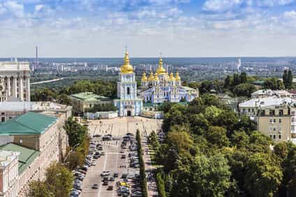

< < < Back
4 European Countries To Emigrate To If The West Collapses – Return Of Kings
A growing number of our readers have raised the issue of which country to emigrate to if the total cultural collapse that some predict finally occurs.
The nations are reviewed on factors that are relevant for men believing in the values of neomasculinity and red pill philosophy. This non-exhaustive list takes into account the following criteria:
- Level of English
- Difficulty of the local language(s)
- Gun laws
- Quality of women (considering beauty, femininity, careerism etc):
- Non-native immigrant population
- Possibility of a long-term stay
- Male competition
- Importance of religion
- Culture of entrepreneurship
- Presence of masculine culture/traditional sex roles
- Quality of food
- Importance of physical fitness in the local culture
- Likelihood of 50-year similar cultural collapse
1. Hungary
-
Level of English: Low. The youth and the educated speak English. Low level as soon as you reach the countryside
-
Difficulty of the local language(s): Very High. THE main issue with Hungary. Finno-Ugric branch, no common base with Germanic, Slavic or Romance languages. I speak seven languages and none helped me
-
Gun laws: Restrictive. Member of the EU (for now), subject to European and local laws. Very hard to purchase a gun for home defense
-
Quality of women: High. Some say they are the most beautiful in Europe. Stylish, sexy and with a fun vibe. They are fairly traditional. Definitely in my European Top 5
-
Non-native immigrant population: Low. They still have about 4% of Gypsies. They did build a wall when the migrants were at the gates. Locals opposed to Brussels politics, strong nationalist leadership
-
Possibility of a long-term stay: Likely (for Westerners). More here.
-
Male competition: Medium. Hungarian guys do have game but usually aim at long term relationships. They are a few rich local men that present serious competition
-
Importance of religion: Medium to high. Catholicism still present but not as strong as in Poland. Abortion is legal under request
-
Culture of entrepreneurship: Medium: Money and success are quite respected. The local laws are generally friendly to budding entrepreneurs
-
Presence of masculine culture and traditional sex roles: Medium. Stronger than in Western Europe but definitely weaker than in Ukraine or Russia. Western culture slowly infiltrates the new generation. Hostile to homosexuals
-
Quality of food: High. The products are usually local and the laws about food are quite strict. Easy to obtain supplements and good meat
-
Importance of physical fitness in the local culture: Medium. Hungarian men are not particularly fit. Hungarian women are very fit and fitness is popular. Low obesity rate
-
Likelihood of 50-year similar cultural collapse: Possible. The European Union has brought money, but also the globalist influence of Brussels. Let’s hope Hungary will remain politically close to Poland in their will to remain sovereign
2. Bulgaria

-
Level of English: Low. The youth and the educated speak English. Low level as soon as you reach the countryside
-
Difficulty of the local language(s): Medium. South Slavic. Easy to learn if you know Russian or Polish. Great base for learning Serbian, Croatian or Slovene. Macedonian is a variation of Bulgarian
-
Gun laws: Restrictive (legally). Member of the European Union (for now) so subject to European and local laws. Hard to purchase a gun legally. Nevertheless, Bulgarians do not care and almost everyone has an illegal gun at home. You have contacts, you have a gun.
-
Quality of women: High. Especially for brunettes’ enthusiasts. Elegant but can be a tough nut to crack. Often prefer local men. Quite addicted to social networks
-
Non-native immigrant population: Low. The highest number of Gypsies in Europe. Significant Turkish native population. Strong native nationalist sentiment
-
Possibility of a long-term stay: Likely (for Westerners). More here.
-
Male competition: Medium to High. Decent foreigner value. Bulgarians and Serbs probably have the highest level of game in EE. They know the power that money and status have on women
-
Importance of religion: Medium to High. Orthodox Christianity is important but does not influence their daily lives. Abortion is legal under request.
-
Culture of entrepreneurship: High: Corruption is rampant. Money and success are king. The local laws encourage entrepreneurs and everyone wants to be one.
-
Presence of masculine culture and traditional sex roles: High. Strong archetypes of man and woman. Girls want a man that will bring her security. Western culture has easily infiltrated the new generation. Very hostile to homosexuals.
-
Quality of food: High. Good local products. Great fruits and vegetables. Mediterranean fresh food. Easy to buy supplements and good meat
-
Importance of physical fitness in the local culture: Very high. National sports are wrestling and weightlifting. Almost every man goes to the gym. Fitness is very popular among girls. Low obesity rate.
3. Ukraine

-
Level of English: Very Low. Rare to find a Ukrainian that speaks English. Start learning Russian.
-
Difficulty of the local language(s): High. No real way around it. Learn Russian. It will open you a lot of doors. Ukrainian is a lot more work and the Russians there do not speak it.
- Gun laws: Relatively lenient.
Citizens are permitted to own non-fully automatic rifles and shotguns as long as they are stored properly when not in use. Handguns are illegal except for target shooting and those who hold concealed carry permits.
A license is required to own firearms.
Also a high number of unregistered guns circulating since the fall of the Soviet Union.
-
Quality of women: High. Highest level of beauty and femininity in Europe. But love and sex feels more like a transaction.
-
Non-native immigrant population: Very Low. Small number of native Tatars, some Georgians and citizens of the FSU. Distrustful towards foreigners. Strong nationalist sentiment.
-
Possibility of a long-term stay: Possible (for Westerners). More here.
-
Male competition: Low to Medium. Excellent foreigner value if paired with Russian. The apex predators (oligarchs, celebrities) are very rare for the sheer number of women. Poverty plays a huge role in game.
-
Importance of religion: Medium to High. Orthodox Christianity has seen a revival since the 1990s. Abortion is legal under request.
-
Culture of entrepreneurship: High: Corruption is an essential part of the economy. If you do not have money, you do not exist. It is a jungle and scams are everywhere. Get some local advisors.
-
Presence of masculine culture and traditional sex roles: High. Strong archetypes of man and woman. Girls want a prosperous family. Western culture appeals to the youth. Extremely hostile to homosexuals.
-
Quality of food: Low. The food industry can do anything they want with the food if they have money. Not easy to buy supplements and good meat. They use paper when they run out of meat for sausages.
-
Importance of physical fitness in the local culture: High. Infrastructures are poor but people train regularly. Girls do not always train but have an excellent diet. Very low obesity rate.
4. Poland
-
Level of English: Medium. People have a decent command of English, especially in the cities.
-
Difficulty of the local language(s): High. Reaching conversational level in Polish will improve your value. Grammatical cases and word endings are a nightmare. It will only be useful in Poland.
-
Gun laws: Restrictive. Member of the EU (for now), subject to European and local laws. Very hard to purchase a gun for home defense. Laws might change with the fear of a conflict with Russia or if they leave Europe.
-
Quality of women: High. Attractive, friendly, carefree and love sex. But not a promise land to find a long term relationship prospect.
-
Non-native immigrant population: Low. Recent influx of Ukrainians and Belarusians. Recently refused the refugee quotas that Merkel imposed. Can be hostile to foreigners. Strong nationalist sentiment.
-
Possibility of a long-term stay: Likely (for Westerners). More here.
-
Male competition: Medium to low. Foreigner value explodes in remote areas. Not an asset in large cities. Large numbers of beta men. Few overly aggressive football hooligan type and rich red-pill men.
-
Importance of religion: High. Catholicism is omnipresent and many see it as an important part of their life. Abortion is illegal unless the life of the mother is at stake.
-
Culture of entrepreneurship: Medium to High Money and success are quite important. Local entrepreneurs are favoured over foreign ones. Polish men largely prefer routine and security over ambition.
-
Presence of masculine culture and traditional sex roles: Medium. Strong culture of men. The Western culture challenges it. Women start to focus on careers. Hostile to homosexuals.
-
Quality of food: High. The products are usually local and must comply with EU regulations. Easy to obtain supplements and good meat.
-
Importance of physical fitness in the local culture: High. There is a strong culture of physical strength in Poland. The “tough guy” stereotype is the end goal for Polish men. Fitness is popular among girls too. Low obesity rate.
Bon voyage
To maximize the chances of a long-term stay, the same solutions pretty much apply everywhere with slight variations:
- Get married to a local girl
- Have a child there
- Use family reunification laws if you have relatives in the target country
- Prove that you are financially secure for the duration of your stay
- Be a highly-qualified immigrant
- Get employed there as qualified labour
- Have no criminal record
- Hire someone on the spot to guide you through the administrative process (worth every penny)
- Cry like a bitch, make a fake Syrian passport, invoke religious/sexual persecution, racism and see where that gets you
See you around for our review of the next four countries for possible relocation…
 If you like this article and are concerned about the future of the Western world, check out Roosh's book Free Speech Isn't Free. It gives an inside look to how the globalist establishment is attempting to marginalize masculine men with a leftist agenda that promotes censorship, feminism, and sterility. It also shares key knowledge and tools that you can use to defend yourself against social justice attacks. Click here to learn more about the book. Your support will help maintain our operation.
If you like this article and are concerned about the future of the Western world, check out Roosh's book Free Speech Isn't Free. It gives an inside look to how the globalist establishment is attempting to marginalize masculine men with a leftist agenda that promotes censorship, feminism, and sterility. It also shares key knowledge and tools that you can use to defend yourself against social justice attacks. Click here to learn more about the book. Your support will help maintain our operation.
Read More: Is It Easier To Get Laid In Poor Countries?